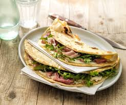

Piadina Romagnola

Description
Piadina is a traditional Italian flatbread originating from the Emilia-Romagna region. It is known for its soft yet slightly crispy texture and is typically filled with delicious ingredients like prosciutto, cheese, and arugula. Unlike pizza, piadina is cooked on a griddle or flat pan, making it quick and easy to prepare at home. This simple yet flavorful flatbread has been a staple in Italian cuisine for centuries, often enjoyed as a street food or a rustic meal.
One of the best things about piadina is its versatility. While the classic version is made with lard, modern variations use olive oil or butter, making it adaptable to different dietary preferences. Whether you prefer a traditional filling or a vegetarian option with fresh vegetables and creamy cheese, this recipe will guide you through making perfect homemade piadina from scratch.
Ingredients
- 500g (4 cups) all-purpose flour
- 125ml (½ cup) water
- 125ml (½ cup) milk
- 10g (2 tsp) salt
- 5g (1 tsp) baking powder (or ½ tsp baking soda)
- 75g (5 tbsp) lard (or olive oil for a lighter version)
Steps
- Prepare the dough: In a large mixing bowl, combine the flour, salt, and baking powder. Add the lard (or olive oil) and mix with your hands until the mixture resembles coarse crumbs.
- Add liquids: Gradually add the water and milk, mixing until a rough dough forms.
- Knead the dough: Transfer the dough to a floured surface and knead for about 10 minutes until smooth and elastic.
- Rest the dough: Cover the dough with a clean kitchen towel and let it rest for at least 30 minutes. This helps relax the gluten, making it easier to roll out.
- Divide and roll out: Divide the dough into 6 equal pieces. Roll each piece into a thin round, about 8 inches (20 cm) in diameter.
- Heat the pan: Preheat a cast-iron skillet or a flat griddle over medium-high heat. No oil is needed.
- Cook the piadina: Place one piadina round in the hot pan and cook for about 1–2 minutes on one side, until bubbles form and golden brown spots appear. Flip and cook for another minute on the other side. Repeat with the remaining dough.
- Fill and serve: Once cooked, fill the warm piadina with your favorite ingredients. Fold it in half and enjoy immediately!
Home